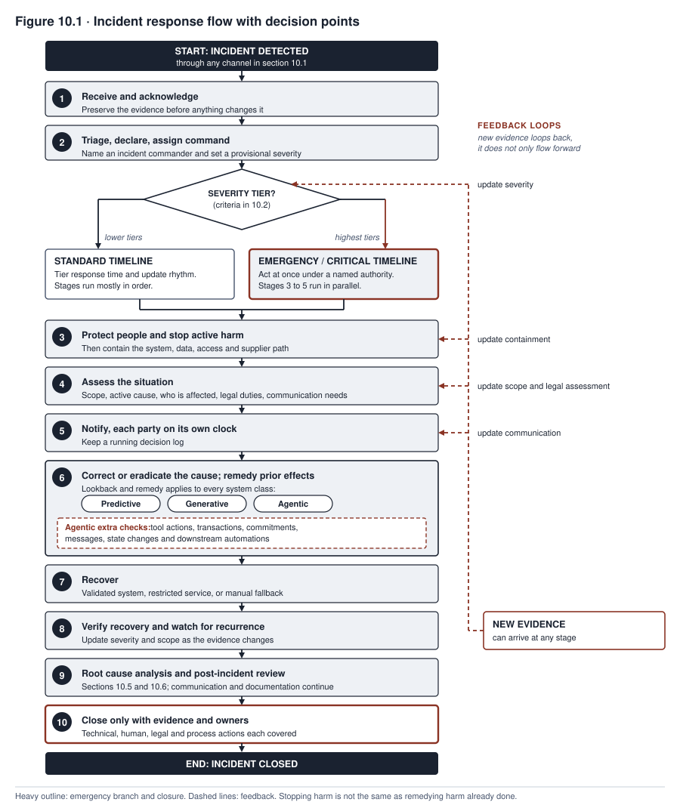
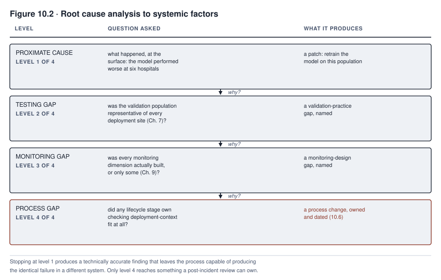

10. Incident Response and Remediation
MEDASSIST’s community hospital gap is the case from Chapter 9. The gap did not end when a retrospective chart review confirmed it. A chart review looks back through patient records to see what happened.
Confirmation was the beginning of a different kind of work. Someone had to decide how serious the finding was. Someone had to decide who had the authority to act on it in the next hour, not the next committee cycle. Someone had to decide whether any regulator needed to hear about it, and on what clock. A regulator is a government body that enforces rules. Someone had to decide why the gap existed in a form deeper than “the model performed worse at six hospitals”. Someone also had to decide what would change afterward, so the same pattern could not go unnoticed for months a second time.
All of these questions belong to incident response. Incident response is the work of handling a failure once it is found. Northfield is the organization in the case in focus, and it answers these questions there. Its answers decide whether the community hospital gap ends as a contained, documented, corrected episode or becomes the first chapter of a worse one.
Response is a discipline with its own structure. It is not an improvisation that begins once monitoring or a user report produces a bad enough number. A system will sometimes fail. How the organization responds is a separate variable, and the organization controls it. That response decides whether a failure stays a governance success story or becomes the harm that the book’s first chapter used to make the stakes concrete. Governance means the rules, roles, and checks an organization uses to control its AI systems.
What you will be able to do
- Identify the detection channels (the ways an incident comes to light) that monitoring alone will not cover, and explain what each can find that planned monitoring did not expect
- Apply a severity classification scheme, which sorts incidents into levels called tiers, and state what response each tier triggers
- Carry out the full incident response lifecycle, including the duty to fix effects already produced and the extra checks that the lookback for an agentic system (one that takes actions on its own) requires
- Identify which incidents must be reported to a regulator, and by when
- Conduct a root cause analysis, a search for why an incident happened, that reaches systemic factors (weaknesses in the organization’s processes) and does not stop at the first proximate cause
10.1 Detection channels
An incident is an event in which an AI system fails or causes harm. An organization learns about an incident through one of several channels. The channel that surfaces a given incident is rarely the one the governance program was built to rely on.
Detection channels are broader than the handful a governance program tends to build first. Grouping them keeps the list usable. Automated internal signals come from monitoring, the subject of Chapter 9. Monitoring is the routine tracking of how a system performs. It catches what its dimensions are built to watch, and no more.
Human internal reports come from people inside the organization. One example is a frontline employee’s direct observation. In the MEDASSIST case, nurses noticed that alert timing felt wrong well before any combined number confirmed it. This group also covers internal audit, security operations, and safety surveillance. It covers an employee escalation or whistleblower report as well. A whistleblower is a person who reports wrongdoing or danger inside their own organization. The report goes through a channel built for that purpose.
Affected-person and customer channels come from the people a system’s decisions land on, not the staff operating it. These people surface an incident through a complaint, a request for explanation, or litigation (a lawsuit). This often happens long after the organization’s own channels should have caught the same pattern. Supplier and partner notifications cover two cases. A vendor may disclose a problem in a purchased component. Or an upstream service incident, a failure at a service the system relies on, may spread into the organization’s own system.
Assurance activity covers what a scheduled test, audit, or evaluation turns up outside its original purpose. Regulators and legal processes surface an incident through an inquiry or a legal claim. The organization did not report it first. Public external discovery happens when a journalist or academic examines a system from outside. That person has no obligation to notify the organization before publishing. The result can turn a contained internal matter into a public one, on a schedule the organization does not control.
Every channel needs the same support to work. It needs accessible intake, meaning a way in that a person can find and use without specialized knowledge. It needs a named triage owner who reviews what comes in. Triage means sorting by urgency. It needs correlation across channels, so that a pattern several channels hint at separately gets recognized as one thing. It also needs acknowledgment to whoever raised the concern, and protection against retaliation for raising it. Where appropriate, it needs feedback on what happened as a result.
Channels an organization did not build can reveal failures that designed monitoring did not anticipate. This is a reason to build several channels and to treat none of them, including monitoring, as enough on its own. No evidence suggests that a channel the organization did not build is the one most likely to find the next incident.
Consider a governance program that is confident in its monitoring dashboard. It may provide no accessible channel for a nurse’s informal observation or an applicant’s complaint. That program has optimized detection for the failures it already expected. Every other way of failing is left to whichever of these other channels happens to notice first, or to none of them.
10.2 Severity classification
A severity scheme sorts an incident into a tier the moment it is identified. A tier is a level of seriousness. The tier determines who responds, how fast, and with what authority. Without a scheme, those decisions would be negotiated fresh under the time pressure each incident brings.
A workable scheme needs criteria specific enough that two different reviewers classify the same incident the same way. That rules out a scheme built only on adjectives. The scheme must also avoid the opposite failure. A rule can be too blunt in two ways. It can treat any health, safety, or fundamental-rights outcome as automatically critical, whatever the scale. Fundamental rights are the basic rights that law protects. Or it can treat an anomaly with no confirmed harm as automatically low tier, however fast it is accumulating. An anomaly is an unusual pattern.
Either version creates two failures. It will overclassify a minor, reversible event, which means rating it too high. A reversible event is one whose effects can be undone. It will also underclassify other events, which means rating them too low. These include a serious near miss, which is an event that almost caused harm. They include an active security compromise and a large but not yet confirmed exposure. They also include a risk accumulating so fast that waiting for confirmation would be its own mistake.
The classification a severity scheme produces at the moment of detection is provisional, because the facts available at that moment are incomplete. The scheme has to be built around that fact. It should assess actual and credible potential harm, and which affected right or domain is involved. It should assess the scale and vulnerability of the population involved, and the reversibility and duration of the harm. It should also assess how far the harm has spread, geographically or across systems. It should assess whether exposure is ongoing and how detectable the problem is. It should weigh whether a legal threshold is involved, meaning a point at which a legal duty begins. It should weigh whether data has been compromised and how operationally critical the affected function is. It should weigh how much uncertainty remains in the assessment itself.
Uncertainty is a reason to escalate immediately and not wait for it to resolve. A provisional severity assigned under uncertainty is expected to be reclassified, upward or downward, as better evidence arrives. It is not a one-time decision locked in at detection.
Once assigned, each severity level maps to a fixed set of commitments. These are a response time, an authority empowered to act, and containment options. They also include a communication obligation, a legal assessment requirement, and a review cadence. Containment means stopping harm from continuing or spreading. A review cadence is how often the incident is reviewed.
Classifying an incident is therefore an instruction. It is not the start of a debate about what to do next. A scheme that sorts incidents into tiers without committing each tier to this full set has built only a taxonomy, a sorting list. It has not built an incident response capability.
10.3 Response procedures
A short version of incident response names five procedures. They are notification, assessment, containment, communication, and documentation. Once an incident is classified, a fuller lifecycle runs than those five. Naming only the five omits stages a real response cannot skip.
One missing stage is declaring the incident and assigning a named commander. Another is protecting people and stopping active harm as its own step, before broader containment. Another is preserving evidence before anything else changes it. The response must also correct or eradicate the active cause, and not only contain it. It must recover service through a validated path, meaning one that has been checked before use, and then verify that recovery worked. Last, it must define a closure authority. Otherwise the end stays implicit, left for when attention moves elsewhere.
The lifecycle applies to every system class. A system class is a kind of AI system. Predictive systems score or decide cases, generative systems produce content, and agentic systems take actions on their own. In sequence, the lifecycle runs as follows.
The response team first receives and acknowledges the triggering signal, and it preserves the evidence around the signal. It then triages the incident, formally declares it, and assigns an incident commander, the person in charge of the response. It sets the provisional severity from section 10.2. Next it protects people and stops active harm. Then it contains the system, the data, the access, and, where relevant, the supplier path. The supplier path is the vendor’s link into the system.
At the same time, the team assesses the scope. It checks whether the cause is still active, who is affected, what legal duties attach, and what communication is needed. Notification reaches the required internal and external parties on each party’s own clock, which is the deadline that applies to that party. A decision log is kept throughout. Alongside this, the team corrects or eradicates the active cause. It also remedies prior effects for every system class, not only the agentic one.
Recovery follows. It happens through a validated system, a restricted service, or a manual fallback, which means doing the task by hand. The team verifies that recovery worked, watches for recurrence, and updates severity and scope as new evidence arrives. Root cause analysis and post-incident review, from sections 10.5 and 10.6, run while communication and documentation continue. Communication and documentation do not wait for that work to finish. The incident closes only once the technical, human, legal, and process actions each have evidence and an owner.
These stages are not strictly sequential for a severe incident. Several run in parallel. New evidence at any point loops back to update severity, scope, containment, communication, or the legal assessment. It does not only feed forward.
Containment stops the harm from continuing or spreading. It is a set of layered options and not a single lever to pull. The team chooses options for the specific incident and does not default to the same response every time.
The options include local access revocation, which removes permissions. They include credential rotation, which replaces passwords and keys. They include isolating a specific integration, which cuts one connection to other software. Other options are stopping a data feed, restricting which users can reach the system, and invoking a vendor’s contractual suspension right. Others are a feature flag, which is a switch that turns one feature off, and a rollback to a prior version. The last two are a manual fallback process and full shutdown.
The right choice is the least disruptive option that controls the credible harm within the time the severity tier requires. Credible harm is harm that could realistically happen. The choice comes from comparing three things. They are the harm, the uncertainty still remaining about its cause and extent, and the fallback that is available. No rule should treat one system class’s containment options as inherently narrower than another’s. Suppose a policy treats continued availability as the default to protect. If it has no documented comparison against the credible harm, it has made that tradeoff by default and not by decision.
Take a purchased system. The deploying organization, the one that uses the system, may not control the vendor’s infrastructure. Even so, its containment is not limited to a contractual disable right. The deployer can typically still revoke local access and rotate its own credentials. It can disable its own integration and stop sending data to the system. It can also restrict which of its own users can reach the system. An organization should confirm which of these options exist, and on what timeline, before an incident makes the question urgent. That confirmation is part of building the containment capability. It is not an afterthought for when the vendor relationship becomes the bottleneck.
For every system class, containing future harm is a different question from remedying harm already done. To remedy is to set right. A response that stops at containment has not finished the job. A predictive decision that wrongly denied an applicant leaves effects after the system is contained. So does a generative output that disclosed sensitive data or published false content. So does an agentic action. Each needs its own lookback, notification, correction, recourse, or remedy for whoever was affected while the system was misbehaving. A lookback is a review of past outputs and actions to find who was affected. Recourse is a way for an affected person to seek a fix.
An agentic incident carries additional checks specific to its own record. These are the tool actions taken, transactions initiated, commitments made, and messages sent. They also include state changes recorded (changes to stored data) and any downstream automation the agent’s actions triggered. Each of these needs its own assessment of whether it can be reversed. Where it cannot be reversed, it needs a compensating action, a new action that offsets the harm. The underlying discipline is that stopping future behavior is not the same task as addressing past effects. It applies across every system class this book covers, not only the one where the point is easiest to see.
TALENTSCREEN’s scheduling agent, an AI agent that schedules interviews for Calloway, was caught by the action volume anomaly in Chapter 9’s case in focus. It illustrates the point directly. Halting the agent the moment the anomaly was confirmed stopped it from scheduling further interviews through the broader calendar access it should never have had. But halting left open the separate question of what to do about every interview already scheduled through that access. Some of those interviews needed to be reviewed, and in a few cases unwound, before the response could be considered complete.
Communication keeps affected parties informed. They may be internal stakeholders (people inside the organization with a stake in the outcome), regulators, or the people harmed. The cadence and level of detail are proportional to the severity tier. Communication is distinct from any regulatory notification, which has its own legal form and timeline.
Documentation records what was known, when, and what was decided. It does this in real time and not in a reconstruction made afterward. A reconstruction written after the fact tends to describe the response the organization wishes it had run, rather than the one it ran.
Decision authority under time pressure is the procedural detail most incident plans get wrong by omission. A plan may name a response but not a specific person or role empowered to invoke it at three in the morning. Such a plan has not built a response capability. It has only described one, and that description depends on improvised authority when improvisation is least reliable. The severity scheme from section 10.2 should already have answered the authority question before any specific incident makes it urgent.

Figure 10.1 shows a ten-stage lifecycle with two timeline branches, standard and emergency. The same severity decision point gates both branches. The figure is not five boxes with a single emergency path. New evidence at any stage loops back to update severity, scope, containment, communication, or the legal assessment. It does not flow in one direction only.
The correct-or-eradicate-and-remedy stage applies to every system class. The agentic-specific checks are tool actions, transactions, commitments, messages, state changes, and downstream automations. They are additional detail within that same universal stage. They do not show that only an agentic incident needs to look backward at what already happened.
The TALENTSCREEN case above also shows the agentic containment obligation. Halting the agent did not complete containment, because interviews already scheduled through the broader access still needed review before containment could be considered complete. A response plan that treated halting the agent as the end of containment would have closed the incident while several of its consequences were still live.
An organization can license a system instead of building it. This is the buy path, and it adds an option to confirm in advance. TALENTSCREEN is licensed rather than built, and Calloway does not control the infrastructure the agent runs on. A full shutdown may therefore require invoking a contractual right to disable functionality, instead of flipping a switch that Calloway owns. That does not mean the vendor holds the only lever. Calloway’s own local access revocation, credential rotation, and integration isolation remain available, whatever the contract says about a full disable.
A response plan for a purchased system needs to know, before an incident, which of the layered containment options it controls itself. It also needs to know which options depend on the vendor, and on what timeline. It should not discover the answer while the incident is already underway. The confirmation should also cover evidence access, log retention (how long records are kept), and the vendor’s contractual duty to cooperate with the organization’s own investigation. A disable right alone does not establish what happened or satisfy a reporting obligation.
A generative system’s containment has the same full range of layered options as any other system class. Which option is right depends on the incident’s harm, uncertainty, and available fallback. No rule says that generative incidents default to narrowing over shutdown. Narrowing is not automatically better than a fuller restriction.
A generative incident is often a pattern of bad outputs rather than a single confirmed decision. So restricting capability, disabling a specific feature, or routing outputs through mandatory human review is frequently sufficient and less disruptive than a full disable. But where the credible harm is severe enough, or too uncertain to limit with a narrower control, shutting the capability down entirely is the correct choice. The framework should not be read as discouraging it.
10.4 Regulatory reporting
A reporting decision depends first on the applicable date. This was checked against the EU AI Act text current on 2026-09-12. The EU AI Act is the European Union’s law on AI. The AI Omnibus Regulation, in force since 27 July 2026, moved the Act’s own high-risk timetable back. High-risk systems are the group of systems for which the Act sets special duties.
The obligations tied to Annex III high-risk systems now apply from 2 December 2027. Annex III is the Act’s list of high-risk uses, and most of this book’s examples fall into that category. The obligations tied to Annex I high-risk product systems, the Act’s other high-risk group, now apply from 2 August 2028. A team building its reporting workflow today is preparing for a duty that has not yet started for most systems. It is not meeting one already in force.
Once that date arrives, a serious incident is a defined legal event and more than a bad outcome. Article 3(49) defines it as an incident or malfunction that leads, directly or indirectly, to death or serious harm to a person’s health. The definition also covers serious and irreversible disruption to critical infrastructure, meaning the systems society depends on. It covers infringement (breach) of Union law protecting fundamental rights. Union law is the law of the European Union. It covers serious harm to property or the environment.
Severity, from section 10.2, and this legal test are separate decisions. An incident can demand the organization’s most urgent internal response without meeting Article 3(49). One that meets it still needs the response that section 10.3 describes.
For high-risk AI systems placed on the Union market, Article 73 places the serious-incident reporting duty primarily on providers, not on deployers generally. A provider builds a system, or has it built, and offers it for use. A deployer uses the system. Article 26 places a separate set of notification and suspension duties on deployers. The recipient of a report is the market surveillance authority in the state where the incident occurred. That authority is the government body that checks that products on the market follow the rules.
The general outer limit for initial notification is fifteen days after the provider becomes aware of the incident. This is subject to the Article’s own causal-link wording connecting the incident to the system. The outer limit shortens to two days for a widespread infringement or the specified serious disruption of critical infrastructure. The limit is ten days where the incident involves a death. A report is due as soon as the link is established, and never later than whichever of these limits applies. It is not held until the investigation ends. An initial report that is incomplete may, and should, be supplemented as the investigation progresses. It should not be held back until it is complete.
Article 73 also sets a rule on changes to the system. A provider should not alter the system in a way that could affect a later evaluation of the incident’s cause before informing the competent authorities. Competent authorities are the officials with legal power to handle the matter. Containment and correction, both discussed above, therefore have to be sequenced with this reporting duty in mind. They cannot run as though the two were independent. The organization’s own classification, its role for the specific system, and any implementing rule issued since 2026-09-12 still need verification for each real event. An implementing rule is a detailed rule issued to carry out the law. These points should not be assumed from this general statement.
Reporting early and supplementing later reverses a common instinct. A first-time incident responder often wants to finish investigating before saying anything. That instinct is backward when the duty is to notify promptly and then supplement the notification as the investigation progresses. An organization that waits for a complete picture before making its first report has typically already missed the deadline for that report.
A compliance program is not ready to meet this clock without advance preparation. It must already have identified which of its systems could trigger this obligation. It must also know which role it holds for each one. It needs a working internal escalation path to the person authorized to file the notification. The organization does not control the clock, so no time remains to build that path after the fact.
MEDASSIST’s community hospital gap required this assessment directly. Northfield’s incident team had to decide which role it held for MEDASSIST at each of the seven hospitals. It had to decide quickly, under the same time pressure as the rest of the response. The role could be provider, deployer, or both for different parts of the system. The team then had to decide whether the gap met Article 3(49)’s definition of a reportable serious incident, given that role. The case in focus works through this as a documented legal assessment and not a foregone conclusion.
10.5 Root cause analysis
Root cause analysis begins after the immediate response has stabilized the situation. Its purpose is to reach systemic factors and not to stop at the first proximate cause an investigation happens to find. A proximate cause is the nearest, most obvious cause. A systemic factor is a weakness in the organization’s processes that lets problems of this shape occur. The proximate cause produces a patch. The systemic factors produce the process change that prevents the next incident of the same shape.
Reaching those factors takes analysis. A predetermined chain of four boxes connected by “why” arrows is not analysis. It assumes in advance that each gap caused the next one in a single line. A testing gap, a monitoring gap, and a process gap are more accurately treated as parallel contributing conditions under a broader governance failure. They stay parallel until the evidence shows one causing another. A method is not analysis if it starts with the answer already chosen. Such a method collects no evidence and tests no competing hypothesis (a rival explanation). It considers no organizational pressure, human factors, supplier role, or specific control failure. It is narration.
A causal analysis map replaces the forced ladder with seven steps. The steps keep the investigation honest about what it knows.
First, build a verified timeline. Separate facts from assumptions and from real unknowns. Second, identify the harm itself, what triggered it, the active mechanism that produced it, and which controls failed or were missing. A control is a safeguard, such as a test, a rule, or a review step.
Third, examine contributing factors across every plausible category. The categories are data, model, software, workflow, people, organization, supplier, environment, and governance. Do not stop at the one or two that come to mind first. Fourth, test competing causal explanations against the evidence and the counterevidence. Do not accept the first explanation that fits.
Fifth, identify where a control should have prevented, detected, limited, or helped recover from the event. A missing control is itself a finding, distinct from the event it failed to catch. Sixth, assign corrective actions to the specific causal factors they address, and prioritize them. State the uncertainty that remains. Do not present the analysis as more conclusive than the evidence supports.
Seventh, validate that a correction worked and watch for recurrence. A corrective action that was never checked is a claim, not a result.
Applied to MEDASSIST’s gap, this method does not find a chain in which a testing gap caused a monitoring gap, which caused a process gap. It more plausibly finds three parallel contributing factors under one governance failure.
The first factor is a testing gap. The validation population was drawn overwhelmingly from the academic center. The validation population is the set of cases used to check the system before it went live. Nobody flagged that sampling decision as a limitation at the time. Chapter 7’s testing did not catch it.
The second factor is a monitoring gap. The monitoring program tracked only the technical and aggregate-performance dimensions. It never built the human-oversight dimension that would have caught the diverging dismissal rates months sooner. Dismissal rates are how often staff dismissed the system’s alerts. Chapter 9’s monitoring did not catch this.
The third factor is a process gap. No stage of the lifecycle, from testing through deployment through monitoring, assigned anyone the responsibility of checking the validation population. The check was whether its composition matched the population the system would serve once deployed across seven distinct sites. That process gap let the other two coexist undetected.
Labeling any one of these three “the root cause” would overstate what the evidence supports. All three were contributing factors. The corrective actions have to address all three, not whichever one is easiest to fix first. A root cause analysis that stops at “the model needs retraining” has produced a technically accurate finding. That finding will not prevent the next system from repeating the same failure through the same process gap.

Figure 10.2 shows a map built from evidence, not a ladder assumed in advance. The seven steps run in the order listed. The output is a set of tested contributing factors, not a single traced chain. MEDASSIST’s case populates the map with three factors sitting in parallel under one governance failure. None causes the next. Those three factors are a testing gap, a monitoring gap, and a process gap that let both persist undetected.
Each factor gets its own corrective action. None of the three is labeled the root cause on its own. The evidence supports all three as contributing, and none as sufficient by itself.
10.6 Post-incident review
A post-incident review converts root cause findings into process change with tracked ownership. The difference between a review that produces process change and one that produces only a report matters.
A complete post-incident record covers more than owner, change, date, and verification. It also covers the impact caused, a timeline of what happened, how the incident was detected, and how the response and communication unfolded. It covers the contributing factors from section 10.5’s causal map. It covers the assumptions the investigation made and where they might be wrong. It covers what went well during the response and what went poorly. It also covers where luck, rather than the response itself, limited how bad the harm became.
The record preserves the evidence the investigation relied on. It states the priority of each corrective action. It defines how the action’s effectiveness will be measured, not only whether it was implemented. It specifies how recurrence will be monitored afterward and who else in the organization needs to see the findings. It names the criteria that would reopen the review. These criteria are a recurrence, new harm, or new evidence that invalidates the original analysis.
Each finding from section 10.5 needs an assigned owner, a specific change, and a date by which the change is verified as implemented and not only proposed. Accountability for the action has to stay separate from personal blame for the incident. A review that functions as a blame exercise will get less honest information the next time something goes wrong. A finding without an owner is a sentence in a document that nobody is accountable for acting on.
A governance function can treat a well-written post-incident report as the deliverable, instead of treating the subsequent process change as the deliverable. If it does, it will accumulate a library of accurate diagnoses next to an unchanged set of processes. An action closes only once it has been implemented and shown, with evidence, to be effective. It does not close when a tracking ticket is marked complete. The review should also verify that the fix addresses the systemic factors and not only the proximate cause. A review that closes MEDASSIST’s incident by confirming the model was retrained has not finished. It must also confirm that the validation and monitoring process changes from section 10.5 were implemented and shown to work. Without that, it has closed the incident without closing the gap that produced it.
Case in focus: an incident worked end to end
MEDASSIST · Hypothetical, following the running cases
The retrospective chart review that surfaced Northfield’s community hospital gap arrived on a Thursday afternoon. The first decision the newly assembled incident team had to make was severity. The gap involved a health-safety outcome. That outcome was delayed sepsis alerts at six of seven hospitals. Sepsis is a life-threatening reaction to infection.
Under Northfield’s severity scheme, that outcome classified as a critical incident regardless of how many specific patients had been affected. It triggered immediate executive notification and a cross-functional response, one involving several teams. The response came inside the four-hour window the scheme specified. A lower tier would have permitted a more measured, business-day response. This tier did not.
Response ran several procedures in parallel and not in sequence. Containment was worked as a decision requiring clinical-safety, operational, and legal evidence. It was not a default reached by elimination. The team compared its options. It could suspend the alerting function, restrict it to a subset of use cases, or recalibrate its thresholds, the cutoffs that trigger an alert. It could switch to an alternative validated tool, use an enhanced protocol without changing the model, or use a manual fallback process. The team weighed each against harm, uncertainty, and available capacity.
Northfield’s clinical safety officer, not the incident team alone, made the final call. The officer chose a defined reduced-confidence mode over suspension. That mode was an explicitly specified higher alert threshold, paired with a mandatory, time-bound nurse review of every borderline case. The documented basis was that removing automated screening at six hospitals carried its own credible safety risk. The assessment found this risk larger than the risk the reduced-confidence mode still carried, once workload capacity at each site was checked against the added review burden.
The decision record specified the affected sites, the expected duration, and the staffing capacity confirmed to support the added review load. It specified explicit success and halt criteria, a patient-communication plan where required, and a monitoring commitment. The commitment was to watch for the alert-fatigue signal that section 9.8 describes. Alert fatigue is what happens when staff dismiss alerts because there are too many. Adding manual review at the sites already showing elevated dismissal rates could plausibly make that specific problem worse if left unmonitored.
Assessment ran at the same time. It worked to establish how many patients across the six hospitals had experienced a delayed or missed alert during the affected period. A prevented deterioration leaves no confirmed case. This is the intervention-affected truth problem from Chapter 9, and it complicated the task. The team had to rely on the same retrospective chart-review method that surfaced the gap, now applied fully instead of as a sample. It evaluated the process and the available evidence. It did not claim to reconstruct each patient’s individual counterfactual, meaning what would have happened without the intervention.
Communication reached hospital leadership and clinical staff at all seven sites within the same day. Its level of technical detail was calibrated to what each audience needed to act on. One message was not sent everywhere unchanged. Documentation captured each decision and its timestamp as the response unfolded. That produced a record the post-incident review would later rely on. It was not a reconstruction assembled afterward from memory.
This hypothetical assumes MEDASSIST’s Annex III obligations are already in force. Section 10.4’s applicable date has to be reached before Article 73’s clock can start. Regulatory reporting required its own determination. Northfield’s compliance lead ran it in parallel with the clinical response. The incident record preserves the determination itself, and not only its outcome.
The compliance lead first documented Northfield’s role for MEDASSIST at each hospital. The academic medical center’s original validation work made a provider determination plausible for some functions. The community-hospital deployment made Northfield a deployer for others. The applicable duties depend on getting that role right, so the role could not be assumed.
Two branches were then assessed against Article 3(49)’s definition. The assessment used the facts already established by the sample-based retrospective review that had surfaced the gap. Those facts were delayed and missed alerts tied to a confirmed pattern of health harm across multiple sites. The assessment ran even though the full chart review had not yet finished. That full review was part of the response’s own assessment procedure and was still running.
The first branch applied if the facts already in hand met the definition’s threshold for Northfield’s provider-side obligations. An initial report would then go to the competent authority within the applicable outer limit. It would be explicitly incomplete and flagged for supplementation once the full review concluded. In the second branch, the facts would not clearly meet the threshold. The assessment would then be recorded as a documented decision that Article 73 reporting did not apply. It would be recorded alongside confirmation that sector-specific health reporting obligations and any contractual notification duties to the community hospitals were still being completed regardless.
Northfield’s compliance lead concluded the first branch applied on the facts available. The lead filed within the window and did not wait for the full review to complete. The record kept both the reasoning and the branch not taken. A later reviewer can see why the determination went the way it did, and not only the conclusion it reached.
Root cause analysis began once the immediate response stabilized. It first used Chapter 3’s system-to-model link, which ties a deployed system to the model behind it. This confirmed which model version each hospital was running. That ruled out a version mismatch before the analysis went further. The analysis then followed the seven-step causal map that section 10.5 develops. It traced the confirmed performance gap back through the validation population’s composition and the monitoring program’s missing human-oversight dimension. Both traced to a lifecycle-wide absence of any checkpoint verifying that a validation population matched its eventual deployment context.
The post-incident review that followed assigned two owners. The clinical informatics director was responsible for building a representativeness check into every future validation before Chapter 7’s testing sign-off. A representativeness check confirms that the validation cases match the patients the system will serve. The operations lead was responsible for adding the human-oversight monitoring dimension that Chapter 9 specifies to every deployed clinical model within a fixed quarter of the year. Both changes were tracked to specific verification dates and not left as recommendations in a closed file.
The incident closed when both process owners confirmed their changes were implemented and verified. Shipping the retrained model did not close it. Section 10.6 draws this distinction between an incident that produces a corrected model and one that produces a corrected process.
Summary
Incidents come to light through automated internal signals and human internal reports. They also come to light through affected-person and customer channels, supplier and partner notifications, assurance activity, regulators and legal processes, and public external discovery. A channel an organization did not build can reveal failures that designed monitoring did not anticipate. This is a reason to build several channels that are accessible, triaged, and correlated, and not to trust any one of them alone.
A workable severity scheme assigns a provisional tier from a stated multi-factor assessment. It escalates under uncertainty and does not wait for certainty. It also commits each tier in advance to a specific response, authority, containment options, communication obligation, legal assessment, and review cadence. Classification is therefore an instruction. It is not the start of a negotiation under time pressure.
Response runs a full incident lifecycle and not five isolated procedures. The lifecycle runs from declaration and command through protection, containment, assessment, notification, correction, recovery, verification, root cause analysis, and closure. Feedback loops carry new evidence back to severity, scope, containment, communication, and legal assessment throughout. Containment is a layered set of options chosen for the specific incident’s harm, uncertainty, and available fallback. Every system class and every acquisition path (built or bought) has some form of it.
Correcting the active cause and remedying prior effects is a universal step. It is not specific to agentic systems. An agentic incident adds its own checks for actions, transactions, commitments, and downstream automations already taken.
Regulatory reporting depends first on which role, provider or deployer, an organization holds for a given system. It attaches to a defined seriousness threshold, with different outer limits by consequence. Its clock starts at awareness and not at the conclusion of investigation. This inverts the instinct to finish investigating before reporting anything. A provider is barred from altering the system in a way that would affect a later cause evaluation before informing authorities.
Root cause analysis builds a causal map from verified evidence and does not assume a predetermined chain. Several contributing factors can sit in parallel under one governance failure. Examples are a testing gap, a monitoring gap, and a process gap. They do not form a line in which each causes the next.
A post-incident review converts those findings into owned, dated, verified process changes. It keeps accountability separate from personal blame. An incident is not closed when the immediate technical fix ships. It closes when the process changes that prevent its recurrence are confirmed, with evidence, as effective.
Review questions
COMPREHENSION
Explain why a governance program built entirely around its monitoring dashboard is structurally likely to miss some incidents. Then name two other detection channels from section 10.1 and say what each is positioned to catch that monitoring is not built to anticipate.
Explain why correcting the active cause and remedying prior effects is a universal step for every system class and not an agentic-specific one. Then state the additional checks that an agentic incident’s lookback needs beyond those of a predictive or generative incident’s lookback.
APPLIED
Design a three-tier severity scheme for a generative customer-support system, specifying the criteria for each tier and the response each tier triggers.
A serious incident’s initial investigation will take three weeks to complete. The regulatory reporting clock requires notification within days of awareness. Describe what the initial notification should contain, given this timing mismatch.
SPOT THE RISK
- A post-incident review ends with a retrained model and a report that describes the root cause in detail. It assigns no owner or verification date to any process change. Identify what is missing and why the incident should not be considered closed.
COMPARE AND DECIDE
- A root cause analysis reaches two candidate systemic factors, a testing gap and a monitoring gap. State the case for addressing both at once versus prioritizing one first. Say what would determine which is more urgent.
RUNNING CASE
MEDASSISTUsing the case in focus, explain why Northfield’s compliance lead filed an initial regulatory report before the full chart review was complete. Say what the supplemental report was expected to add.
Part II applied one incident lifecycle to predictive, generative, and agentic systems alike. Chapter 11 and Chapter 12 now each take up one of the two capabilities this book has tracked throughout, generation and autonomous action. Each chapter develops the controls specific to its capability. Chapter 11 takes up generation first. It begins with why a system that produces open-ended content needs controls that the shared lifecycle does not supply by itself.